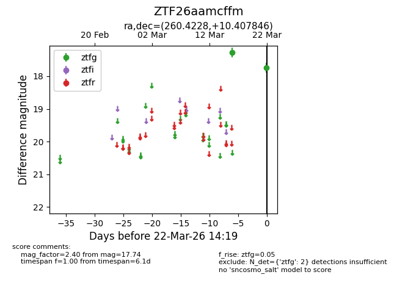
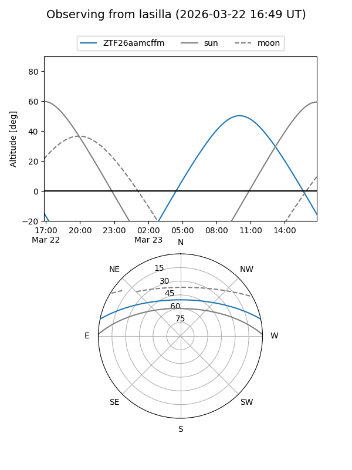
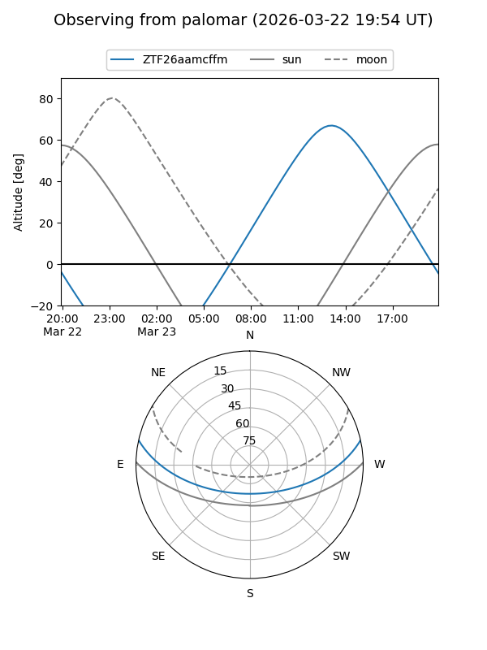

ZTF26aamcffm
Target ZTF26aamcffm at 2026-03-22 14:21
Aliases and brokers:
FINK: link
Lasair: link
ALeRCE: link
alt names
ZTF26aamcffm (ztf,fink_ztf)
Coordinates:
equatorial (ra, dec) = 260.4228,+10.40785
equatorial (HMS+DMS) = 17:21:41.48,+10:24:28.24
galactic (l, b) = (32.2772,+24.61134)
Flags:
Photometry:
last ztfg=17.74
2 ztfg detections
Lightcurve

Visibility


Additional plots